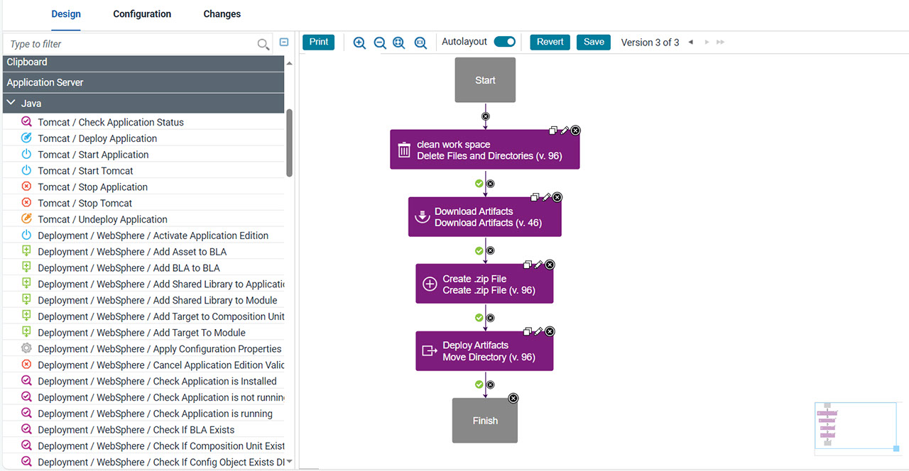

Plug-ins
The Deploy plug-ins provide tools for creating component processes and integrations. IBM provides plug-ins for several common deployment processes, and others are available to integrate with a wide variety of tools, such as middleware tools, databases, and servers.
Plug-ins provide processing and integration functions. There are two types of plug-ins:
- Source-type plug-ins integrate with external systems to import artifacts and create component versions.
- Automation-type plug-ins provide process steps that manipulate components, typically by deploying them.
Both types of plug-ins consist of distinct processes called steps. Each step consists of a number of properties, a command that runs the step, and post-processing instructions. (Post-processing typically ensures that expected results occur.) Step properties can serve various purposes, from providing input to the command to supplying some, or all, the actual command itself. Automation-type plug-in properties can be set at design time in the process editor, or at run time in the user interface. Source-type plug-in properties are typically defined when a component is created.
Automation-type plug-ins
You use automation plug-ins to deploy components or otherwise manage them. Each step is a self-contained unit with inputs, outputs, and properties. By combining automation plug-in steps in the process editor, you can create fully automated deployment processes. When you create a process, you drag steps onto the design area and define the properties as you go. Property values can be specified when you define the process or at run time. The process flow is defined by drawing connections between steps. The following illustration, shows a series of automation-type plug-in steps and the connections between them.

For information about creating component processes, see Component processes.
At deployment time, component processes are run by agents that are installed in the target environment. For a process to run, the agent must have access to all resources, tools, and files that are required by the plug-in steps in the process. When you install an agent, ensure that these conditions are met:
- The agent that runs the process has the necessary user permissions to run commands and can access required resources. Assigning these permissions typically entails granting permissions if an external tool is installed as a different user; installing the agent as a service; or impersonating the appropriate user. See User impersonation for process steps.
- External tools that plug-in steps require are installed in the target environment.
- The required minimum version of an external tool is installed.
For information about installing agents, see Installing agents from the command line.
Source-type plug-ins
You use source plug-ins to import artifacts and create component versions. A source plug-in defines the type of artifacts that can be imported and identifies where the artifacts are located. Source-type plug-ins are configured when components are created, you do not use the process editor to configure source-type plug-ins. Unlike automation plug-ins, source plug-ins always have a single step, the Import Version step.
Artifacts are imported into component versions by agents that are running in the environment where the artifacts are located. For a component version to be created, the agent must have the required permissions and access to all required resources and files. For information about installing agents that run source plug-ins, see System settings.
Viewing and obtaining plug-ins
Plug-ins that are shipped with the product are called core plug-ins and plug-ins that can be downloaded and installed from the Deploy plug-ins are called external plug-ins.
View core plug-ins from the user interface as follows:
- To view source config plug-ins, click . The following source configuration plug-ins are available:For information on how to use the source config plug-ins that are provided with Deploy, see Creating components.
Plug-in Description ClearCase Automates importing version artifacts from ClearCase (Base and UCM). File System Automates uploading artifacts from a normal file system. File System (Versioned) Automates uploading artifacts from a versioned file system. Git Automates importing artifacts from Git. Maven Automates downloading artifacts from Maven projects. Subversion Automates importing artifacts from a Subversion repository TFS Automates importing version artifacts from a TFS server. TFS_SCM Automates importing version artifacts from a TFS server. uBuild Automates uploading artifacts from a UrbanCode Build server. zOS File Automates uploading data sets, UNIX files and generic artifacts from a z/OS system. - To view automation plug-ins, click . The following automation plug-ins are available:
Plug-in Description File Utils Includes steps, such as deleting or creating directories and replacing tokens in a file, that perform folder-level and file-level tasks as part of a deployment process. General Utilities Provides utilities for basic tasks that don't fit in a specific plug-in. Groovy Provides steps for executing user defined Groovy scripts. Shell Allows users to run custom shell scripts during the deployment process. System Information Includes a variety of checks to perform against the operating system. These steps can be used to verify that a deployment can succeed or has succeeded. UrbanCode Deploy Applications Creates and manages Deploy applications. UrbanCode Deploy Component Creates and manages Deploy components. UrbanCode Deploy Configuration Management Downloads and uploads configuration templates from/to Deploy. UrbanCode Deploy Environments Creates and manages Deploy environments. UrbanCode Deploy Processes Supports interaction with processes and process requests. UrbanCode Deploy Resources Manages Deploy resources. UrbanCode Deploy Versioned File Storage Allows Deploy to upload artifacts to CodeStation. UrbanCode Deploy Versions Allows editing Component Versions in Deploy. zOS Utility Includes steps related to deployment activities for z/OS.
Plug-ins can be developed and updated more frequently than IBM provided release cycles.
Browse, download, and get documentation for external plug-ins from the Deploy plug-in. The site contains many more plug-ins than are packaged with the Deploy product.
The site includes plug-ins that are developed by these sources:
- IBM® Corporation
- Your DevOps Deploy license entitles you to download and install the
plug-ins that are developed by IBM
Corporation.
Support is provided through the developerWorks® community and through IBM technical support.
- Partners
- Plug-ins that are provided by partners can be purchased from the partner website.
Support for each partner plug-in is provided exclusively by the partner who provided the plug-in.
- Community
- Plug-ins are provided by members of the Deploy community on the IBM
Development Community website. Search for deploy or
ucplugin to find plug-ins. You can contribute to code in the community
or use code posted there to incorporate into your own.
Support is provided exclusively through the community.
For information about installing plug-ins, see Installing plug-ins.